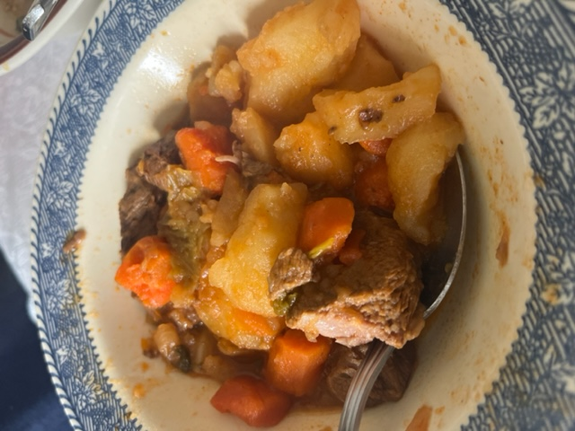

Beef Caldo

Description:
So yes, my mom actually taught me this recipe but we all stand on the shoulders of giants no? Anyways, we have some round chuck beef, some veggies and some spices of course. Yeet!
Ingredients:
- 1 (16 ounce) of your favorite angus beef chuck
- Salt and pepper to taste
- A couple pieces of corn
- A couple of carrots
- 1 clove garlic, minced
- 1 jalepeno
- Some cabbage/lettuce
- Zuchini(optional)
- Water
Steps:
- Bring a large pot of lightly salted water to a boil. Throw in beef and let it cook.
- Next we want to prep all of the vegetables. Let's now wash and chop our vegetables into even portions/bite size. Throw them into our pot.
- Let's not add some garlic, salt and pepper. You can also add some of your favorite all-purpose seasoning or my favorite, chile and crushed pepper.
- Now let's this boil/cook for about another 20 minutes or until the vegetable are soft to your liking.
- Once cooked and served, add some chopped onion and jalepeno.
- Enjoy!